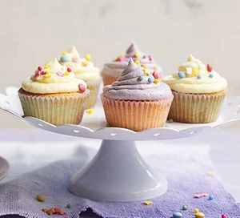

Cupcakes Recipe

Description
This recipe is for simple vanilla cupcakes
Ingredients
- 120g butter, softened
- 120g caster sugar
- 2 eggs
- 1 tsp vanilla extract
- 120g self-raising flour
Steps
- Heat oven to 180C/160C fan/gas 4 and line a 12-hole muffin tin with paper cases.
- Cream the butter and sugar together in a bowl until pale. Beat the eggs in a separate bowl and mix into the butter mixture along with the vanilla extract.
- Fold in the flour, adding a little milk until the mixture is of a dropping consistency. Spoon the mixture into the paper cases until they are three quarters full.
- Bake in the oven for 10-15 minutes, or until golden-brown on top and a skewer inserted into one of the cakes comes out clean. Set aside to cool for 5-10 minutes. Then place on a wire rack.